Complete documentation and gallery of graph generation capabilities
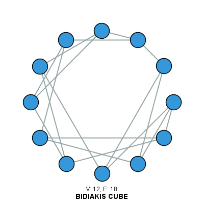
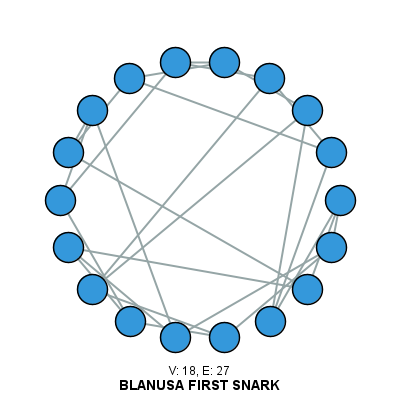
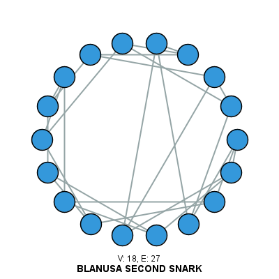
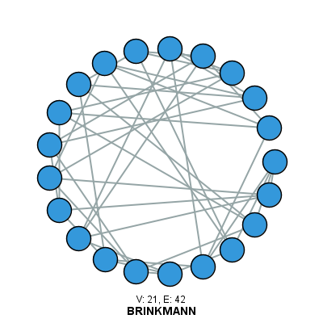
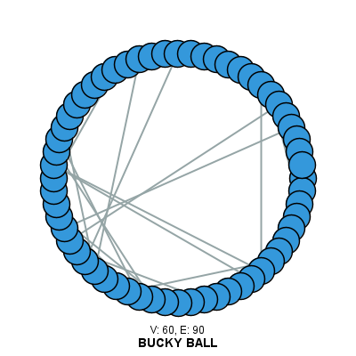
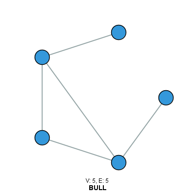
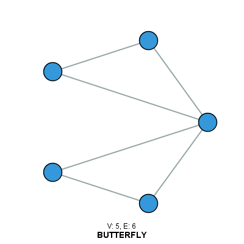
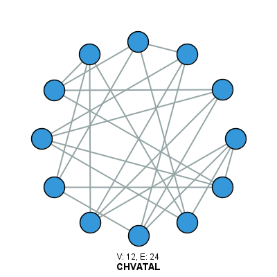
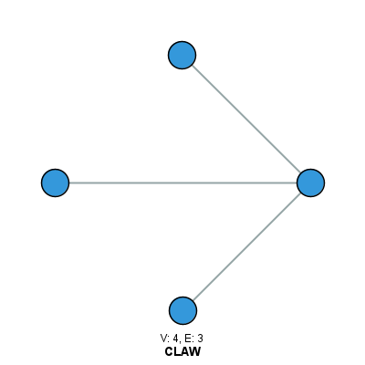
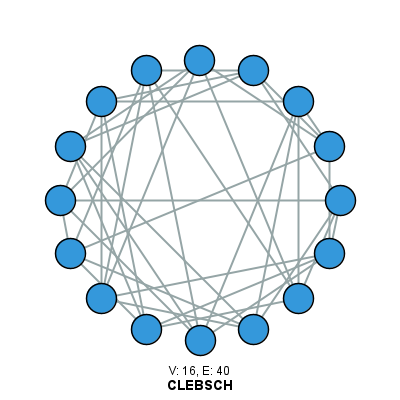
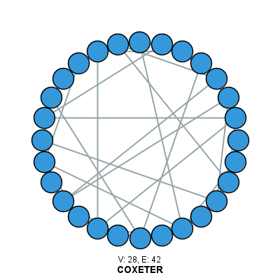
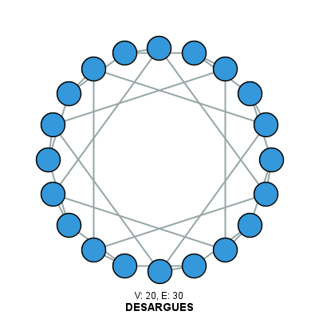
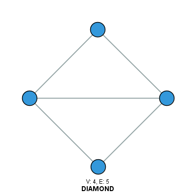
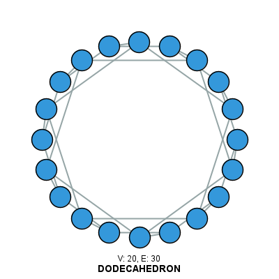
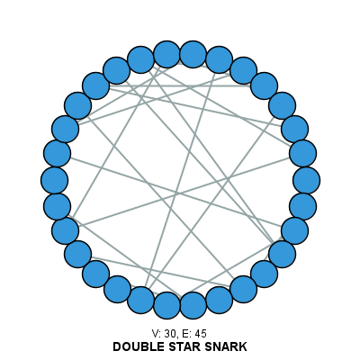
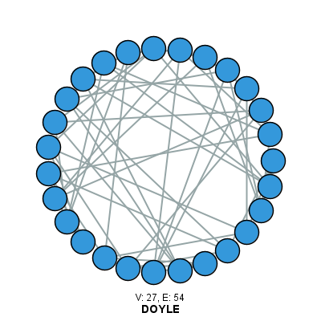
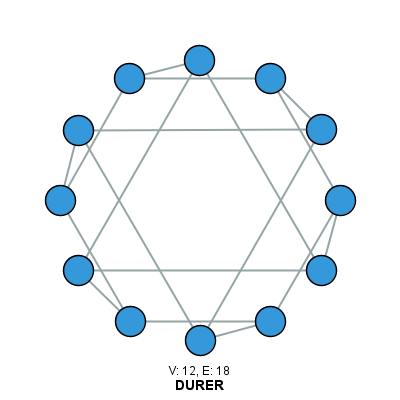
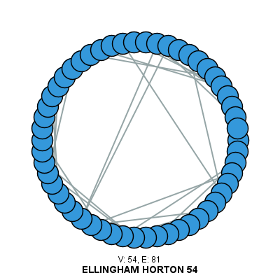
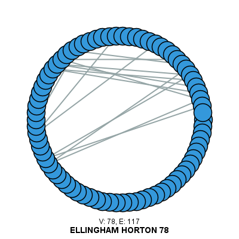
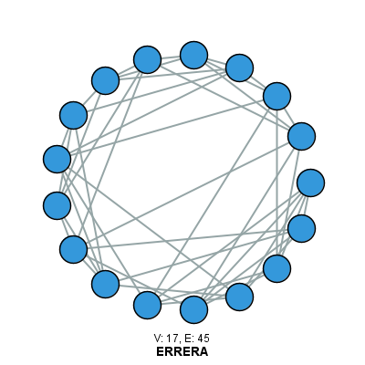
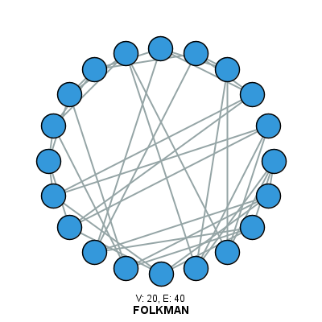
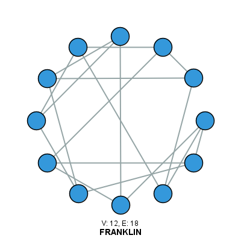
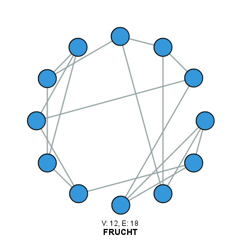
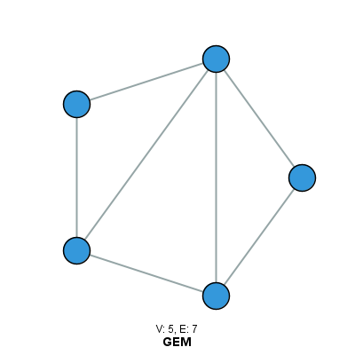
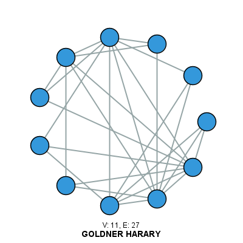
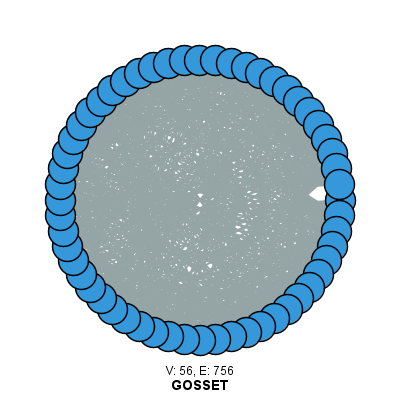
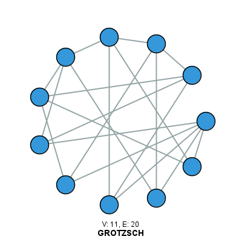
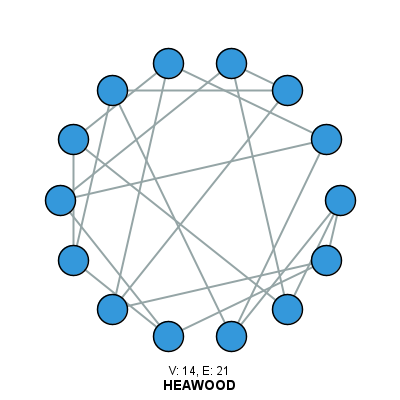
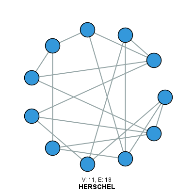
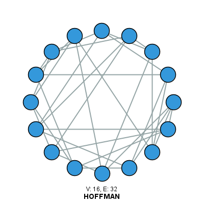
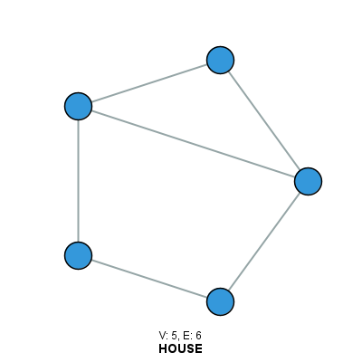
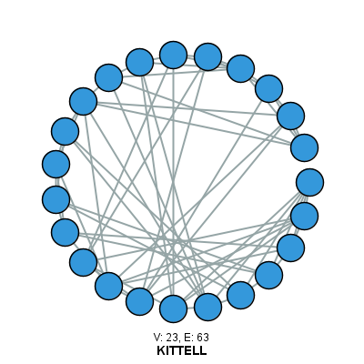
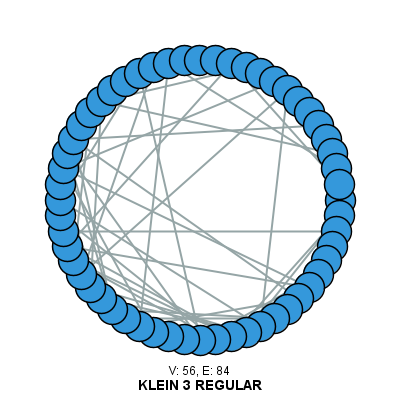
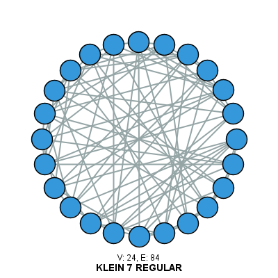
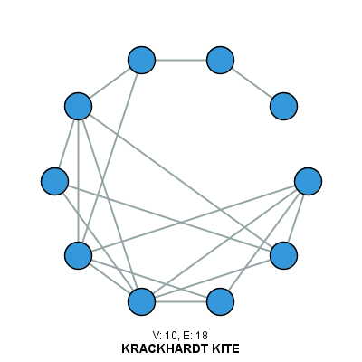
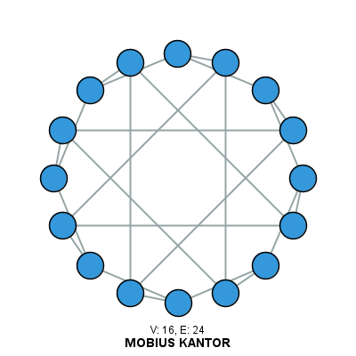
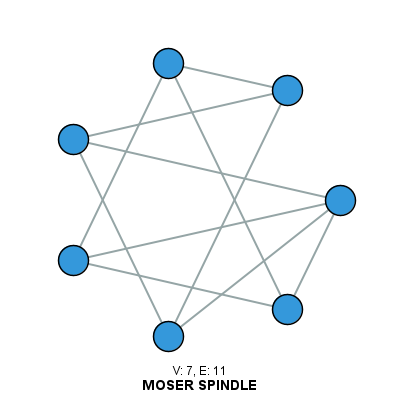
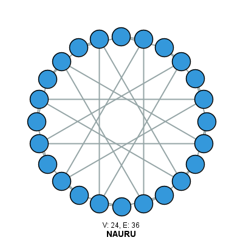
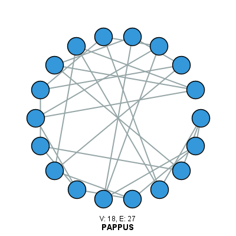
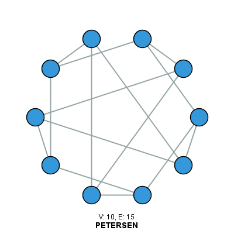
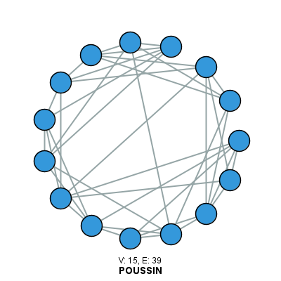
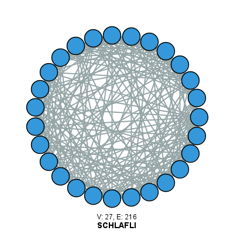
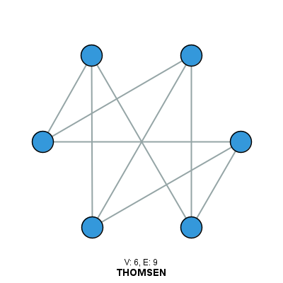
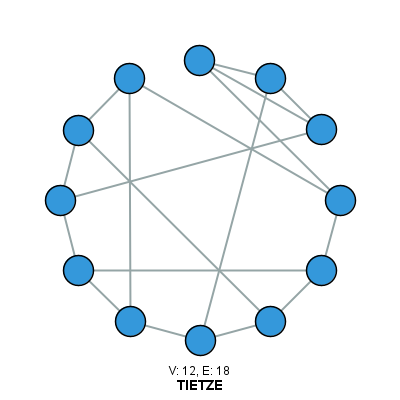
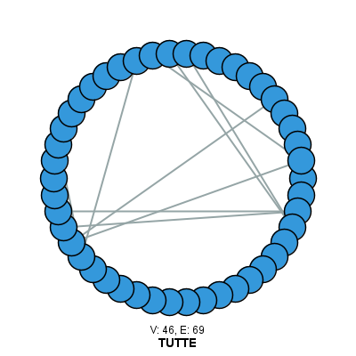
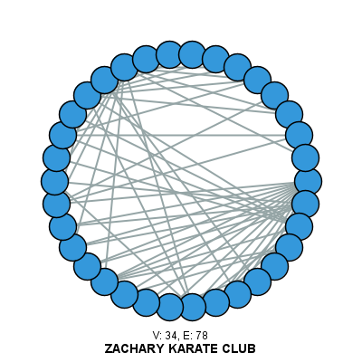
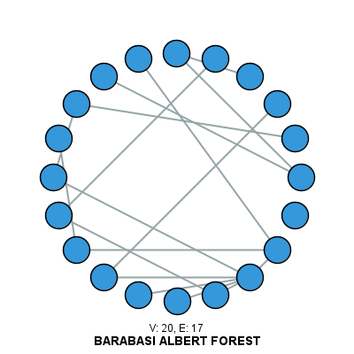
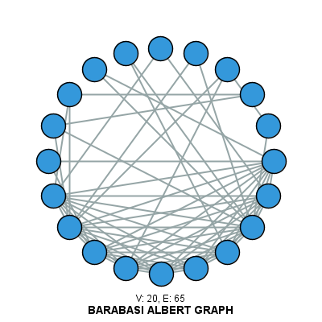
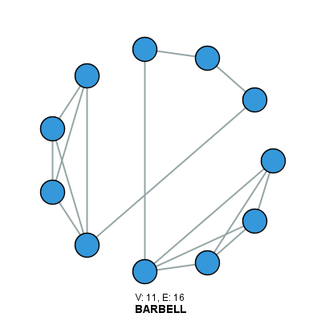
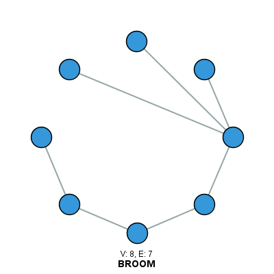
The ALGatorGraph library provides two main graph classes: Graph (undirected) and DGraph (directed). Both support generic vertex and edge types with generic weights.
// Create an undirected graph with String vertices and Integer weights
Graph<String, Integer> cityGraph = new Graph<>();
// Add vertices (cities)
cityGraph.addVertex("New York");
cityGraph.addVertex("Boston");
cityGraph.addVertex("Washington DC");
// Create edges with weights
Edge<String, Integer> edge1 = new Edge<>("New York", "Boston", 215);
Edge<String, Integer> edge2 = new Edge<>("New York", "Washington DC", 225);
Edge<String, Integer> edge3 = new Edge<>("Boston", "Washington DC", 440);
// Add edges to the graph
cityGraph.addEdge("New York", "Boston", edge1);
cityGraph.addEdge("New York", "Washington DC", edge2);
cityGraph.addEdge("Boston", "Washington DC", edge3);
// Get all vertices and edges
Set<String> cities = cityGraph.vertexSet();
Set<Edge<String, Integer>> routes = cityGraph.edgeSet();
System.out.println(cityGraph);
// Create a directed graph
DGraph<String, Double> webGraph = new DGraph<>();
// Add web pages as vertices
webGraph.addVertex("Page A");
webGraph.addVertex("Page B");
webGraph.addVertex("Page C");
// Add directed edges (hyperlinks) with weights (importance scores)
DEdge<String, Double> link1 = new DEdge<>("Page A", "Page B", 0.85);
DEdge<String, Double> link2 = new DEdge<>("Page A", "Page C", 0.45);
DEdge<String, Double> link3 = new DEdge<>("Page B", "Page C", 0.92);
webGraph.addEdge("Page A", "Page B", link1);
webGraph.addEdge("Page A", "Page C", link2);
webGraph.addEdge("Page B", "Page C", link3);
// Check outgoing links from Page A
Set<DEdge<String, Double>> outLinks = webGraph.outgoingEdgesOf("Page A");
System.out.println("Outgoing links from Page A: " + outLinks);
// Create an unweighted graph
Graph<Integer, Object> myGraph = new Graph<>();
// Add vertices 0 through 4
for (int i = 0; i < 5; i++) {
myGraph.addVertex(i);
}
// Add unweighted edges using the simple addEdge method
// (creates edges with null weights automatically)
myGraph.addEdge(0, 1);
myGraph.addEdge(0, 2);
myGraph.addEdge(1, 2);
myGraph.addEdge(1, 3);
myGraph.addEdge(2, 4);
myGraph.addEdge(3, 4);
// Display graph information
System.out.println("Number of vertices: " + myGraph.vertexSet().size());
System.out.println("Number of edges: " + myGraph.edgeSet().size());
The GraphCreator class provides a unified interface for generating various types of graphs using the generateGraph() method. Graph types are specified using the GraphTypes enum.
// Generate the Petersen graph (no parameters needed)
String[] args = {"PETERSEN"};
Graph<Integer, DefaultWeightedEdge> petersenGraph = GraphCreator.generateGraph(args);
System.out.println("Petersen Graph:");
System.out.println(" Vertices: " + petersenGraph.vertexSet().size()); // Output: 10
System.out.println(" Edges: " + petersenGraph.edgeSet().size()); // Output: 15
// Generate a complete graph with 5 vertices
String[] args = {"COMPLETE", "5"};
Graph<Integer, DefaultWeightedEdge> completeGraph = GraphCreator.generateGraph(args);
System.out.println("Complete Graph K5:");
System.out.println(" Vertices: " + completeGraph.vertexSet().size()); // Output: 5
System.out.println(" Edges: " + completeGraph.edgeSet().size()); // Output: 10
// Generate a random graph with 20 vertices and edge probability 0.3
String[] args = {"GNP_RANDOM_GRAPH", "20", "0.3", "12345"};
Graph<Integer, DefaultWeightedEdge> randomGraph = GraphCreator.generateGraph(args);
System.out.println("Random Graph (GNP):");
System.out.println(" Vertices: " + randomGraph.vertexSet().size());
System.out.println(" Edges: " + randomGraph.edgeSet().size());
// Generate a 4x5 grid graph
String[] args = {"GRID", "4", "5"};
Graph<Integer, DefaultWeightedEdge> gridGraph = GraphCreator.generateGraph(args);
System.out.println("Grid Graph (4x5):");
System.out.println(" Vertices: " + gridGraph.vertexSet().size()); // Output: 20
System.out.println(" Edges: " + gridGraph.edgeSet().size()); // Output: 31
// Generate a scale-free network with 100 vertices
String[] args = {"SCALE_FREE", "100", "42"};
Graph<Integer, DefaultWeightedEdge> scaleFreeGraph = GraphCreator.generateGraph(args);
System.out.println("Scale-Free Network:");
System.out.println(" Vertices: " + scaleFreeGraph.vertexSet().size());
System.out.println(" Edges: " + scaleFreeGraph.edgeSet().size());
GraphTypes enum includes over 80 different graph types, ranging from classic named graphs (Petersen, Chvátal, Karate Club) to parameterized generators (Complete, Grid, Watts-Strogatz, etc.). Check the gallery above for the complete list!
The GraphCreator class automatically detects formats based on file extensions. Supported formats and their sources include:
.graphml): GD Benchmark Sets.net, .paj, .mat): Pajek Datasets.edges, .mtx): Network Repository.txt, .csv): SNAP Repository.graph): DIMACS Archive.lst): House of Graphs.edgelist): MalNet Project
// Import a single graph from a file (format is auto-detected)
File graphFile = new File("path/to/mygraph.graphml");
Graph importedGraph = GraphCreator.importGraphFromFile(graphFile);
if (importedGraph != null) {
System.out.println("Successfully imported graph:");
System.out.println(" Vertices: " + importedGraph.vertexSet().size());
System.out.println(" Edges: " + importedGraph.edgeSet().size());
} else {
System.out.println("Failed to import graph");
}
// Import all graphs from a folder (creates import_log.txt)
String folderPath = "path/to/graphs/folder";
List<Graph> graphCollection = GraphCreator.importGraphsFromFolder(folderPath);
System.out.println("Imported " + graphCollection.size() + " graphs successfully");
// Display information about each imported graph
for (int i = 0; i < graphCollection.size(); i++) {
Graph g = graphCollection.get(i);
System.out.println("Graph " + i + ": " + g.vertexSet().size() + " vertices, " + g.edgeSet().size() + " edges");
}
// Get all graph names in a collection
String folderPath = "path/to/graphs";
String collectionName = "my_collection";
String[] graphNames = GraphCreator.getGraphNames(folderPath, collectionName);
System.out.println("Graphs in collection: " + Arrays.toString(graphNames));
// Get a random graph from the collection
Graph randomGraph = GraphCreator.getRandomGraph(folderPath, collectionName);
// Get description of a specific graph
GraphCreator.GraphDescription desc = GraphCreator.getGraphDescription(folderPath, collectionName, graphNames[0]);
System.out.println(desc);
// The import process handles errors gracefully
// - OutOfMemoryError: System attempts to empty memory and continue importing the rest of the graphs
// - Parse errors: Skips problematic files and logs them in a log file inside the graph folder
// - Log file: import_log.txt is created with success/failure status for each graph
List<Graph> graphs = GraphCreator.importGraphsFromFolder("path/to/folder");
// Check the log file for details on any failures
File logFile = new File("path/to/folder/import_log.txt");
// Format: filename success(1/0)